sim_1 <- function(sample_size = 500) {
x = runif(n = sample_size) * 5
y = 3 + 5 * x + rnorm(n = sample_size, mean = 0, sd = 1)
data.frame(x, y)
}
sim_2 <- function(sample_size = 500) {
x = runif(n = sample_size) * 5
y = 3 + 5 * x + rnorm(n = sample_size, mean = 0, sd = x)
data.frame(x, y)
}
sim_3 <- function(sample_size = 500) {
x = runif(n = sample_size) * 5
y = 3 + 5 * x ^ 2 + rnorm(n = sample_size, mean = 0, sd = 5)
data.frame(x, y)
}13 Model Diagnostics
“Your assumptions are your windows on the world. Scrub them off every once in a while, or the light won’t come in.”
— Isaac Asimov
After reading this chapter you will be able to:
- Understand the assumptions of a regression model.
- Assess regression model assumptions using visualizations and tests.
- Understand leverage, outliers, and influential points.
- Be able to identify unusual observations in regression models.
13.1 Model Assumptions
Recall the multiple linear regression model that we have defined.
\[ Y_i = \beta_0 + \beta_1 x_{i1} + \beta_2 x_{i2} + \cdots + \beta_{p-1} x_{i(p-1)} + \epsilon_i, \qquad i = 1, 2, \ldots, n. \]
Using matrix notation, this model can be written much more succinctly as
\[ Y = X \beta + \epsilon. \]
Given data, we found the estimates for the \(\beta\) parameters using
\[ \hat{\beta} = \left( X^\top X \right)^{-1}X^\top y. \]
We then noted that these estimates had mean
\[ \text{E}[\hat{\beta}] = \beta, \]
and variance
\[ \text{Var}[\hat{\beta}] = \sigma^2 \left( X^\top X \right)^{-1}. \]
In particular, an individual parameter, say \(\hat{\beta}_j\) had a normal distribution
\[ \hat{\beta}_j \sim N\left(\beta_j, \sigma^2 C_{jj} \right) \]
where \(C\) was the matrix defined as
\[ C = \left(X^\top X\right)^{-1}. \]
We then used this fact to define
\[ \frac{\hat{\beta}_j - \beta_j}{s_e \sqrt{C_{jj}}} \sim t_{n-p}, \]
which we used to perform hypothesis testing.
So far we have looked at various metrics such as RMSE, RSE, and \(R^2\) to determine how well our model fits our data. Each of these in some way considers the expression
\[ \sum_{i = 1}^n (y_i - \hat{y}_i)^2. \]
So, essentially each of these looks at how close the data points are to the model. However is that all we care about?
- It could be that the errors are made in a systematic way, which means that our model is misspecified. We may need additional interaction terms, or polynomial terms which we will see later.
- It is also possible that at a particular set of predictor values, the errors are very small, but at a different set of predictor values, the errors are large.
- Perhaps most of the errors are very small, but some are very large. This would suggest that the errors do not follow a normal distribution.
Are these issues that we care about? If all we would like to do is predict, possibly not, since we would only care about the size of our errors. However, if we would like to perform inference, for example to determine if a particular predictor is important, we care a great deal. All of the distributional results, such as a \(t\)-test for a single predictor, are derived under the assumptions of our model.
Technically, the assumptions of the model are encoded directly in a model statement such as,
\[ Y_i = \beta_0 + \beta_1 x_{i1} + \beta_2 x_{i2} + \cdots + \beta_{p-1} x_{i(p-1)} + \epsilon_i \]
where \(\epsilon_i \sim N(0, \sigma^2).\)
Often, the assumptions of linear regression, are stated as,
- Linearity: the response can be written as a linear combination of the predictors. (With noise about this true linear relationship.)
- Independence: the errors are independent.
- Normality: the distribution of the errors should follow a normal distribution.
- Equal Variance: the error variance is the same at any set of predictor values.
The linearity assumption is encoded as
\[ \beta_0 + \beta_1 x_{i1} + \beta_2 x_{i2} + \cdots + \beta_{p-1} x_{i(p-1)}, \]
while the remaining three, are all encoded in
\[ \epsilon_i \sim N(0, \sigma^2), \]
since the \(\epsilon_i\) are \(iid\) normal random variables with constant variance.
If these assumptions are met, great! We can perform inference, and it is valid. If these assumptions are not met, we can still “perform” a \(t\)-test using R, but the results are not valid. The distributions of the parameter estimates will not be what we expect. Hypothesis tests will then accept or reject incorrectly. Essentially, garbage in, garbage out.
13.2 Checking Assumptions
We’ll now look at a number of tools for checking the assumptions of a linear model. To test these tools, we’ll use data simulated from three models:
\[ \text{Model 1:} \quad Y = 3 + 5x + \epsilon, \quad \epsilon \sim N(0, 1) \]
\[ \text{Model 2:} \quad Y = 3 + 5x + \epsilon, \quad \epsilon \sim N(0, x^2) \]
\[ \text{Model 3:} \quad Y = 3 + 5x^2 + \epsilon, \quad \epsilon \sim N(0, 25) \]
Fitted versus Residuals Plot
Probably our most useful tool will be a Fitted versus Residuals Plot. It will be useful for checking both the linearity and constant variance assumptions.
Data generated from Model 1 above should not show any signs of violating assumptions, so we’ll use this to see what a good fitted versus residuals plot should look like. First, we’ll simulate observations from this model.
set.seed(42)
sim_data_1 <- sim_1()
head(sim_data_1) x y
1 4.574030 24.773995
2 4.685377 26.475936
3 1.430698 8.954993
4 4.152238 23.951210
5 3.208728 20.341344
6 2.595480 14.943525We then fit the model and add the fitted line to a scatterplot.
plot(y ~ x, data = sim_data_1, col = "grey", pch = 20,
main = "Data from Model 1")
fit_1 <- lm(y ~ x, data = sim_data_1)
abline(fit_1, col = "darkorange", lwd = 3)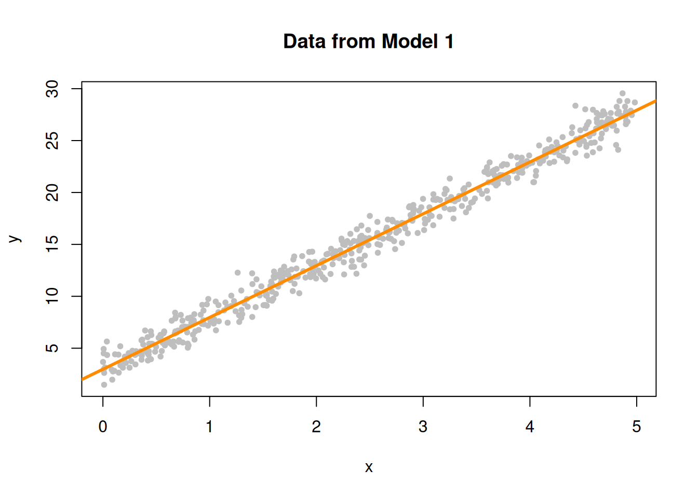
We now plot a fitted versus residuals plot. Note, this is residuals on the \(y\)-axis despite the ordering in the name. Sometimes you will see this called a residuals versus fitted, or residuals versus predicted plot.
plot(fitted(fit_1), resid(fit_1), col = "grey", pch = 20,
xlab = "Fitted", ylab = "Residuals", main = "Data from Model 1")
abline(h = 0, col = "darkorange", lwd = 2)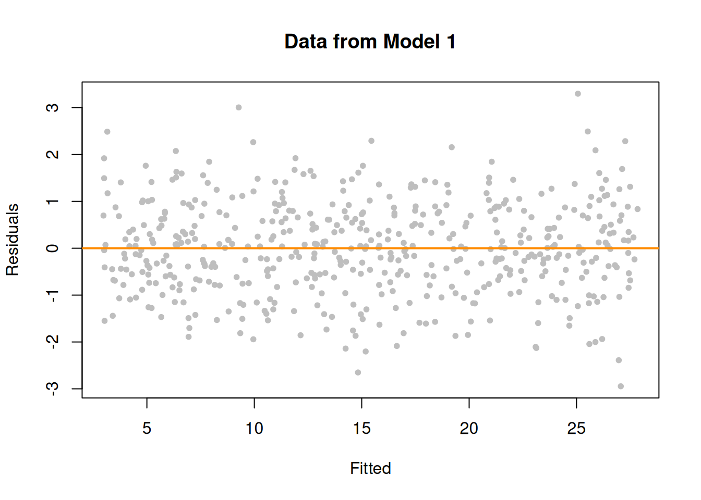
We should look for two things in this plot.
- At any fitted value, the mean of the residuals should be roughly 0. If this is the case, the linearity assumption is valid. For this reason, we generally add a horizontal line at \(y = 0\) to emphasize this point.
- At every fitted value, the spread of the residuals should be roughly the same. If this is the case, the constant variance assumption is valid.
Here we see this is the case for both.
To get a better idea of how a fitted versus residuals plot can be useful, we will simulate from models with violated assumptions.
Model 2 is an example of non-constant variance. In this case, the variance is larger for larger values of the predictor variable \(x\).
set.seed(42)
sim_data_2 <- sim_2()
fit_2 <- lm(y ~ x, data = sim_data_2)
plot(y ~ x, data = sim_data_2, col = "grey", pch = 20,
main = "Data from Model 2")
abline(fit_2, col = "darkorange", lwd = 3)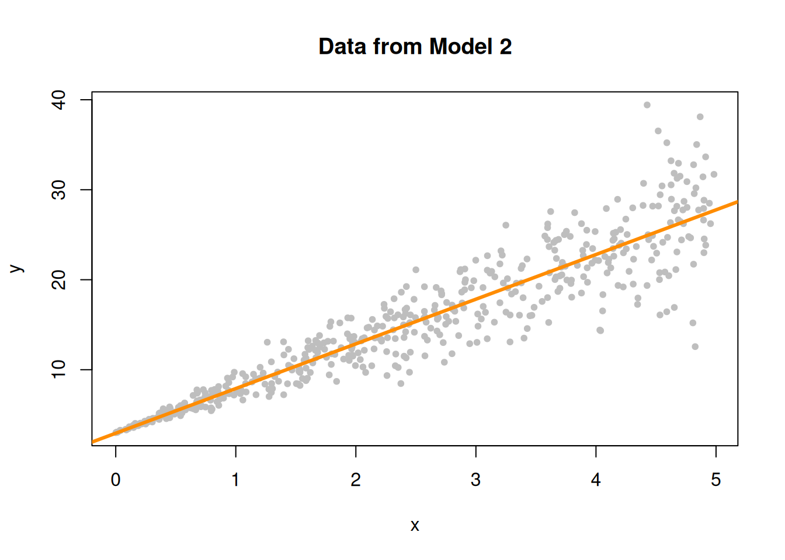
This actually is rather easy to see here by adding the fitted line to a scatterplot. This is because we are only performing simple linear regression. With multiple regression, a fitted versus residuals plot is a necessity, since adding a fitted regression to a scatterplot isn’t exactly possible.
plot(fitted(fit_2), resid(fit_2), col = "grey", pch = 20,
xlab = "Fitted", ylab = "Residuals", main = "Data from Model 2")
abline(h = 0, col = "darkorange", lwd = 2)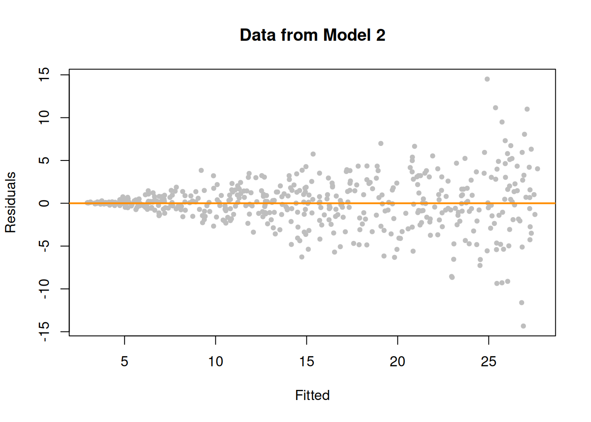
On the fitted versus residuals plot, we see two things very clearly. For any fitted value, the residuals seem roughly centered at 0. This is good! The linearity assumption is not violated. However, we also see very clearly, that for larger fitted values, the spread of the residuals is larger. This is bad! The constant variance assumption is violated here.
Now we will demonstrate a model which does not meet the linearity assumption. Model 3 is an example of a model where \(Y\) is not a linear combination of the predictors. In this case the predictor is \(x\), but the model uses \(x^2\). (We’ll see later that this is something that a “linear” model can deal with. The fix is simple, just make \(x^2\) a predictor!)
set.seed(42)
sim_data_3 <- sim_3()
fit_3 <- lm(y ~ x, data = sim_data_3)
plot(y ~ x, data = sim_data_3, col = "grey", pch = 20,
main = "Data from Model 3")
abline(fit_3, col = "darkorange", lwd = 3)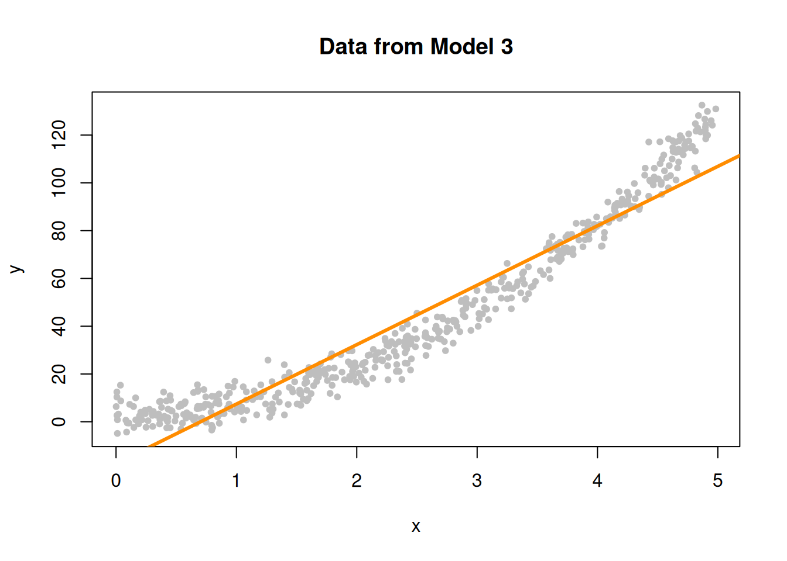
Again, this is rather clear on the scatterplot, but again, we wouldn’t be able to check this plot for multiple regression.
plot(fitted(fit_3), resid(fit_3), col = "grey", pch = 20,
xlab = "Fitted", ylab = "Residuals", main = "Data from Model 3")
abline(h = 0, col = "darkorange", lwd = 2)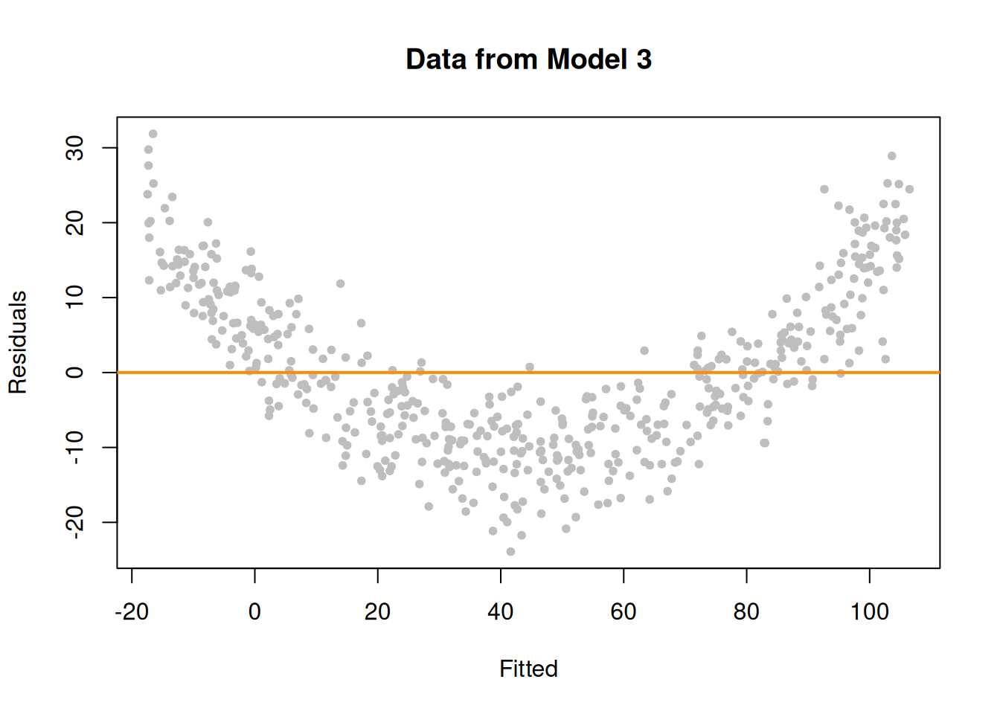
This time on the fitted versus residuals plot, for any fitted value, the spread of the residuals is about the same. However, they are not even close to centered at zero! At small and large fitted values the model is underestimating, while at medium fitted values, the model is overestimating. These are systematic errors, not random noise. So the constant variance assumption is met, but the linearity assumption is violated. The form of our model is simply wrong. We’re trying to fit a line to a curve!
Breusch-Pagan Test
Constant variance is often called homoscedasticity. Conversely, non-constant variance is called heteroscedasticity. We’ve seen how we can use a fitted versus residuals plot to look for these attributes.
While a fitted versus residuals plot can give us an idea about homoscedasticity, sometimes we would prefer a more formal test. There are many tests for constant variance, but here we will present one, the Breusch-Pagan Test. The exact details of the test will be omitted here, but importantly the null and alternative can be considered to be,
- \(H_0\): Homoscedasticity. The errors have constant variance about the true model.
- \(H_1\): Heteroscedasticity. The errors have non-constant variance about the true model.
Isn’t that convenient? A test that will specifically test the constant variance assumption.
The Breusch-Pagan Test can not be performed by default in R, however the function bptest in the lmtest package implements the test.
#install.packages("lmtest")
library(lmtest)Let’s try it on the three models we fit above. Recall,
fit_1had no violation of assumptions,fit_2violated the constant variance assumption, but not linearity,fit_3violated linearity, but not constant variance.
bptest(fit_1)
studentized Breusch-Pagan test
data: fit_1
BP = 1.0234, df = 1, p-value = 0.3117For fit_1 we see a large p-value, so we do not reject the null of homoscedasticity, which is what we would expect.
bptest(fit_2)
studentized Breusch-Pagan test
data: fit_2
BP = 76.693, df = 1, p-value < 2.2e-16For fit_2 we see a small p-value, so we reject the null of homoscedasticity. The constant variance assumption is violated. This matches our findings with a fitted versus residuals plot.
bptest(fit_3)
studentized Breusch-Pagan test
data: fit_3
BP = 0.33466, df = 1, p-value = 0.5629Lastly, for fit_3 we again see a large p-value, so we do not reject the null of homoscedasticity, which matches our findings with a fitted versus residuals plot.
Histograms
We have a number of tools for assessing the normality assumption. The most obvious would be to make a histogram of the residuals. If it appears roughly normal, then we’ll believe the errors could truly be normal.
par(mfrow = c(1, 3))
hist(resid(fit_1),
xlab = "Residuals",
main = "Histogram of Residuals, fit_1",
col = "darkorange",
border = "dodgerblue",
breaks = 20)
hist(resid(fit_2),
xlab = "Residuals",
main = "Histogram of Residuals, fit_2",
col = "darkorange",
border = "dodgerblue",
breaks = 20)
hist(resid(fit_3),
xlab = "Residuals",
main = "Histogram of Residuals, fit_3",
col = "darkorange",
border = "dodgerblue",
breaks = 20)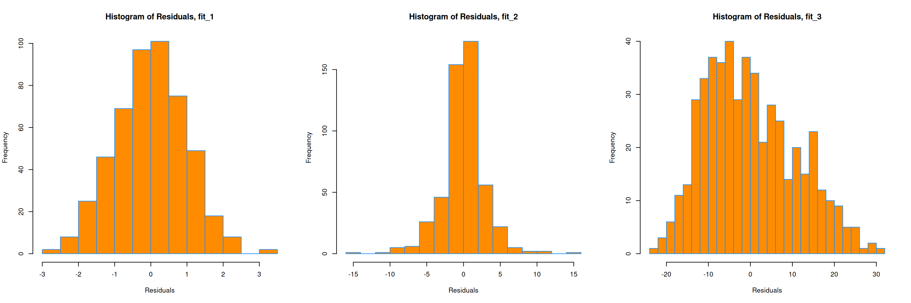
Above are histograms for each of the three regression models we have been considering. Notice that the first, for fit_1 appears very normal. The third, for fit_3, appears to be very non-normal. However fit_2 is not as clear. It does have a rough bell shape, however, it also has a very sharp peak. For this reason we will usually use more powerful tools such as Q-Q plots and the Shapiro-Wilk test for assessing the normality of errors.
Q-Q Plots
Another visual method for assessing the normality of errors, which is more powerful than a histogram, is a normal quantile-quantile plot, or Q-Q plot for short.
In R these are very easy to make. The qqnorm() function plots the points, and the qqline() function adds the necessary line. We create a Q-Q plot for the residuals of fit_1 to check if the errors could truly be normally distributed.
qqnorm(resid(fit_1), main = "Normal Q-Q Plot, fit_1", col = "darkgrey")
qqline(resid(fit_1), col = "dodgerblue", lwd = 2)
In short, if the points of the plot do not closely follow a straight line, this would suggest that the data do not come from a normal distribution.
The calculations required to create the plot vary depending on the implementation, but essentially the \(y\)-axis is the sorted data (observed, or sample quantiles), and the \(x\)-axis is the values we would expect if the data did come from a normal distribution (theoretical quantiles).
The Wikipedia page for Normal probability plots gives details on how this is implemented in R if you are interested.
Also, to get a better idea of how Q-Q plots work, here is a quick function which creates a Q-Q plot:
qq_plot <- function(e) {
n = length(e)
normal_quantiles = qnorm(((1:n - 0.5) / n))
# normal_quantiles = qnorm(((1:n) / (n + 1)))
# plot theoretical verus observed quantiles
plot(normal_quantiles, sort(e),
xlab = c("Theoretical Quantiles"),
ylab = c("Sample Quantiles"),
col = "darkgrey")
title("Normal Q-Q Plot")
# calculate line through the first and third quartiles
slope = (quantile(e, 0.75) - quantile(e, 0.25)) / (qnorm(0.75) - qnorm(0.25))
intercept = quantile(e, 0.25) - slope * qnorm(0.25)
# add to existing plot
abline(intercept, slope, lty = 2, lwd = 2, col = "dodgerblue")
}We can then verify that it is essentially equivalent to using qqnorm() and qqline() in R.
set.seed(420)
x <- rnorm(100, mean = 0 , sd = 1)
par(mfrow = c(1, 2))
qqnorm(x, col = "darkgrey")
qqline(x, lty = 2, lwd = 2, col = "dodgerblue")
qq_plot(x)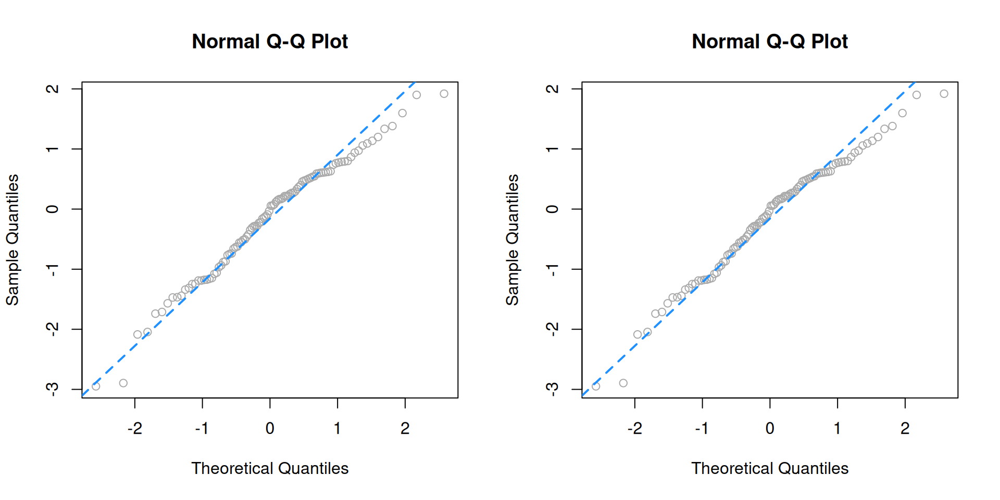
To get a better idea of what “close to the line” means, we perform a number of simulations, and create Q-Q plots.
First we simulate data from a normal distribution with different sample sizes, and each time create a Q-Q plot.
par(mfrow = c(1, 3))
set.seed(420)
qq_plot(rnorm(10))
qq_plot(rnorm(25))
qq_plot(rnorm(100))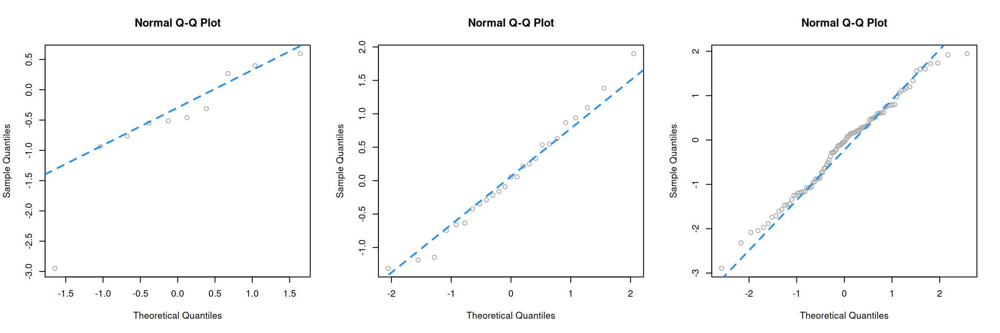
Since this data is sampled from a normal distribution, these are all, by definition, good Q-Q plots. The points are “close to the line” and we would conclude that this data could have been sampled from a normal distribution. Notice in the first plot, one point is somewhat far from the line, but just one point, in combination with the small sample size, is not enough to make us worried. We see with the large sample size, all of the points are rather close to the line.
Next, we simulate data from a \(t\) distribution with a small degrees of freedom, for different sample sizes.
par(mfrow = c(1, 3))
set.seed(420)
qq_plot(rt(10, df = 4))
qq_plot(rt(25, df = 4))
qq_plot(rt(100, df = 4))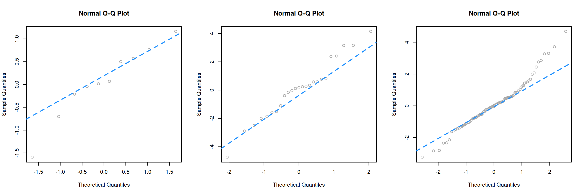
Recall that as the degrees of freedom for a \(t\) distribution become larger, the distribution becomes more and more similar to a normal. Here, using 4 degrees of freedom, we have a distribution that is somewhat normal, it is symmetrical and roughly bell-shaped, however it has “fat tails.” This presents itself clearly in the third panel. While many of the points are close to the line, at the edges, there are large discrepancies. This indicates that the values are too small (negative) or too large (positive) compared to what we would expect for a normal distribution. So for the sample size of 100, we would conclude that the normality assumption is violated. (If these were residuals of a model.) For sample sizes of 10 and 25 we may be suspicious, but not entirely confident. Reading Q-Q plots, is a bit of an art, not completely a science.
Next, we simulate data from an exponential distribution.
par(mfrow = c(1, 3))
set.seed(420)
qq_plot(rexp(10))
qq_plot(rexp(25))
qq_plot(rexp(100))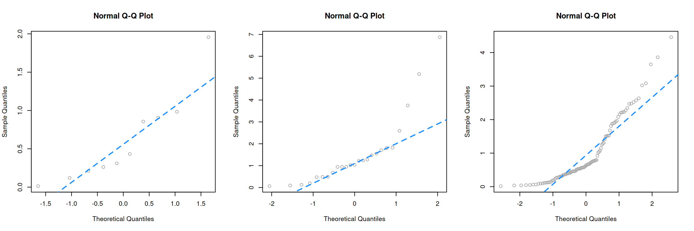
This is a distribution that is not very similar to a normal, so in all three cases, we see points that are far from the lines, so we would think that the normality assumption is violated.
For a better understanding of which Q-Q plots are “good,” repeat the simulations above a number of times (without setting the seed) and pay attention to the differences between those that are simulated from normal, and those that are not. Also consider different sample sizes and distribution parameters.
Returning to our three regressions, recall,
fit_1had no violation of assumptions,fit_2violated the constant variance assumption, but not linearity,fit_3violated linearity, but not constant variance.
We’ll now create a Q-Q plot for each to assess normality of errors.
qqnorm(resid(fit_1), main = "Normal Q-Q Plot, fit_1", col = "darkgrey")
qqline(resid(fit_1), col = "dodgerblue", lwd = 2)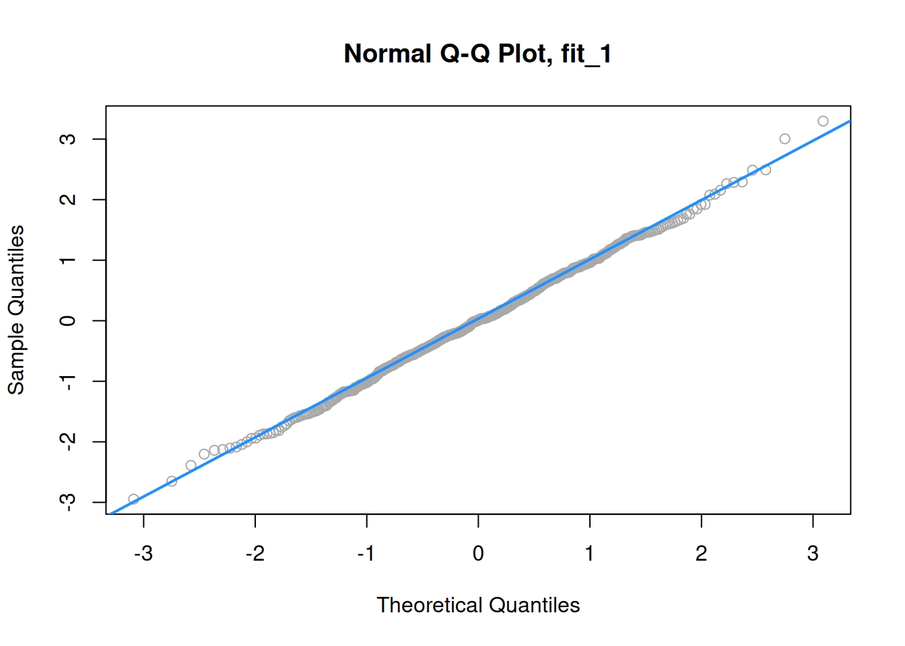
For fit_1, we have a near perfect Q-Q plot. We would believe the errors follow a normal distribution.
qqnorm(resid(fit_2), main = "Normal Q-Q Plot, fit_2", col = "darkgrey")
qqline(resid(fit_2), col = "dodgerblue", lwd = 2)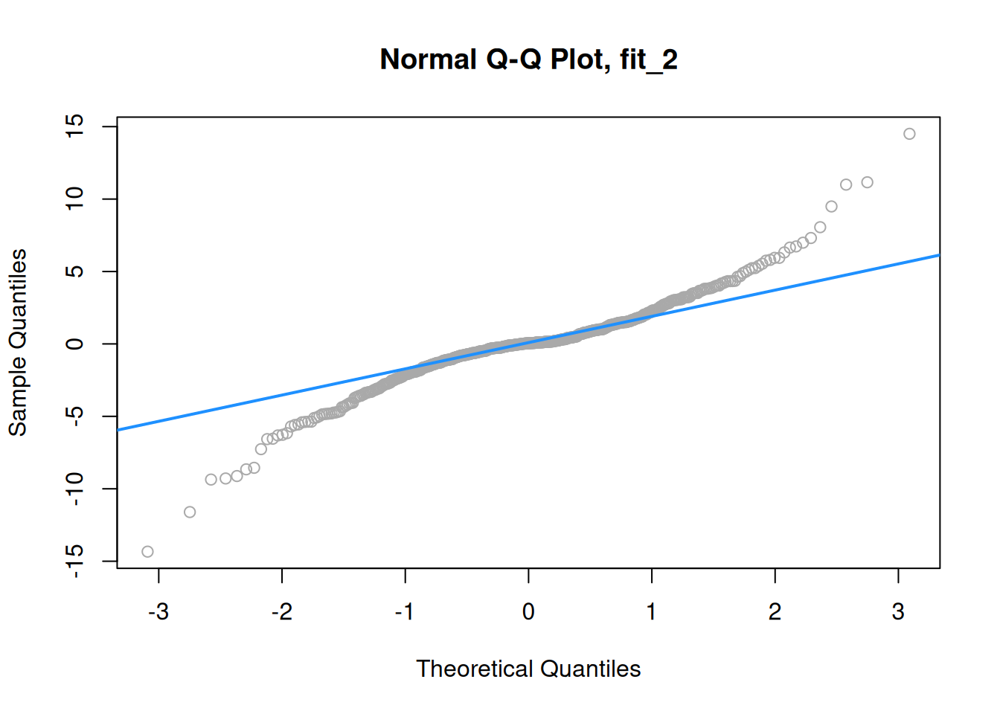
For fit_2, we have a suspect Q-Q plot. We would probably not believe the errors follow a normal distribution.
qqnorm(resid(fit_3), main = "Normal Q-Q Plot, fit_3", col = "darkgrey")
qqline(resid(fit_3), col = "dodgerblue", lwd = 2)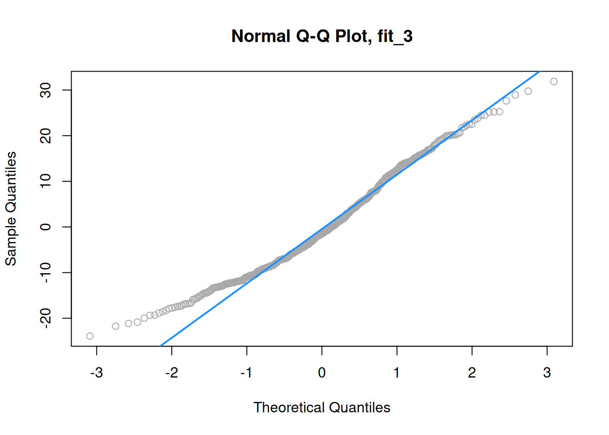
Lastly, for fit_3, we again have a suspect Q-Q plot. We would probably not believe the errors follow a normal distribution.
Shapiro-Wilk Test
Histograms and Q-Q Plots give a nice visual representation of the residuals distribution, however if we are interested in formal testing, there are a number of options available. A commonly used test is the Shapiro–Wilk test, which is implemented in R.
set.seed(42)
shapiro.test(rnorm(25))
Shapiro-Wilk normality test
data: rnorm(25)
W = 0.9499, p-value = 0.2495shapiro.test(rexp(25))
Shapiro-Wilk normality test
data: rexp(25)
W = 0.71164, p-value = 1.05e-05This gives us the value of the test statistic and its p-value. The null hypothesis assumes the data were sampled from a normal distribution, thus a small p-value indicates we believe there is only a small probability the data could have been sampled from a normal distribution.
For details, see: Wikipedia: Shapiro–Wilk test.
In the above examples, we see we fail to reject for the data sampled from normal, and reject on the non-normal data, for any reasonable \(\alpha\).
Returning again to fit_1, fit_2, and fit_3, we see the result of running shapiro.test() on the residuals of each, returns a result for each that matches decisions based on the Q-Q plots.
shapiro.test(resid(fit_1))
Shapiro-Wilk normality test
data: resid(fit_1)
W = 0.99858, p-value = 0.9622shapiro.test(resid(fit_2))
Shapiro-Wilk normality test
data: resid(fit_2)
W = 0.93697, p-value = 1.056e-13shapiro.test(resid(fit_3))
Shapiro-Wilk normality test
data: resid(fit_3)
W = 0.97643, p-value = 3.231e-0713.3 Unusual Observations
In addition to checking the assumptions of regression, we also look for any “unusual observations” in the data. Often a small number of data points can have an extremely large influence on a regression, sometimes so much so that the regression assumptions are violated as a result of these points.
The following three plots are inspired by an example from Linear Models with R.
par(mfrow = c(1, 3))
set.seed(42)
ex_data = data.frame(x = 1:10,
y = 10:1 + rnorm(n = 10))
ex_model <- lm(y ~ x, data = ex_data)
# low leverage, large residual, small influence
point_1 <- c(5.4, 11)
ex_data_1 <- rbind(ex_data, point_1)
model_1 <- lm(y ~ x, data = ex_data_1)
plot(y ~ x, data = ex_data_1, cex = 2, pch = 20, col = "grey",
main = "Low Leverage, Large Residual, Small Influence")
points(x = point_1[1], y = point_1[2], pch = 1, cex = 4, col = "black", lwd = 2)
abline(ex_model, col = "dodgerblue", lwd = 2)
abline(model_1, lty = 2, col = "darkorange", lwd = 2)
legend("bottomleft", c("Original Data", "Added Point"),
lty = c(1, 2), col = c("dodgerblue", "darkorange"))
# high leverage, small residual, small influence
point_2 <- c(18, -5.7)
ex_data_2 <- rbind(ex_data, point_2)
model_2 <- lm(y ~ x, data = ex_data_2)
plot(y ~ x, data = ex_data_2, cex = 2, pch = 20, col = "grey",
main = "High Leverage, Small Residual, Small Influence")
points(x = point_2[1], y = point_2[2], pch = 1, cex = 4, col = "black", lwd = 2)
abline(ex_model, col = "dodgerblue", lwd = 2)
abline(model_2, lty = 2, col = "darkorange", lwd = 2)
legend("bottomleft", c("Original Data", "Added Point"),
lty = c(1, 2), col = c("dodgerblue", "darkorange"))
# high leverage, large residual, large influence
point_3 <- c(14, 5.1)
ex_data_3 <- rbind(ex_data, point_3)
model_3 <- lm(y ~ x, data = ex_data_3)
plot(y ~ x, data = ex_data_3, cex = 2, pch = 20, col = "grey", ylim = c(-3, 12),
main = "High Leverage, Large Residual, Large Influence")
points(x = point_3[1], y = point_3[2], pch = 1, cex = 4, col = "black", lwd = 2)
abline(ex_model, col = "dodgerblue", lwd = 2)
abline(model_3, lty = 2, col = "darkorange", lwd = 2)
legend("bottomleft", c("Original Data", "Added Point"),
lty = c(1, 2), col = c("dodgerblue", "darkorange"))
The blue solid line in each plot is a regression fit to the 10 original data points stored in ex_data. The dashed orange line in each plot is the result of adding a single point to the original data in ex_data. This additional point is indicated by the circled point.
The slope of the regression for the original ten points, the solid blue line, is given by:
coef(ex_model)[2] x
-0.9696033 The added point in the first plot has a small effect on the slope, which becomes:
coef(model_1)[2] x
-0.9749534 We will say that this point has low leverage, is an outlier due to its large residual, but has small influence.
The added point in the second plot also has a small effect on the slope, which is:
coef(model_2)[2] x
-0.9507397 We will say that this point has high leverage, is not an outlier due to its small residual, and has a very small influence.
Lastly, the added point in the third plot has a large effect on the slope, which is now:
coef(model_3)[2] x
-0.5892241 This added point is influential. It both has high leverage, and is an outlier due to its large residual.
We’ve now mentioned three new concepts: leverage, outliers, and influential points, each of which we will discuss in detail.
Leverage
A data point with high leverage, is a data point that could have a large influence when fitting the model.
Recall that,
\[ \hat{\beta} = \left(X^\top X \right)^{-1} X^\top y. \]
Thus,
\[ \hat{y} = X \hat{\beta} = X \left(X^\top X \right)^{-1} X^\top y \]
Now we define,
\[ H = X \left(X^\top X\right)^{-1} X^\top \]
which we will refer to as the hat matrix. The hat matrix is used to project onto the subspace spanned by the columns of \(X\). It is also simply known as a projection matrix.
The hat matrix is a matrix that takes the original \(y\) values, and adds a hat!
\[ \hat{y} = H y \]
The diagonal elements of this matrix are called the leverages
\[ H_{ii} = h_i, \]
where \(h_i\) is the leverage for the \(i\)th observation.
Large values of \(h_i\) indicate extreme values in \(X\), which may influence regression. Note that leverages only depend on \(X\).
Here, \(p\), the number of \(\beta\)s, is also the trace (and rank) of the hat matrix.
\[ \sum_{i = 1}^n h_i = p \]
What is a value of \(h_i\) that would be considered large? There is no exact answer to this question. A common heuristic would be to compare each leverage to two times the average leverage. A leverage larger than this is considered an observation to be aware of. That is, if
\[ h_i > 2 \bar{h} \]
we say that observation \(i\) has large leverage. Here,
\[ \bar{h} = \frac{\sum_{i = 1}^n h_i}{n} = \frac{p}{n}. \]
For simple linear regression, the leverage for each point is given by
\[ h_i = \frac{1}{n} + \frac{(x_i - \bar{x})^2}{S_{xx}}. \]
This expression should be familiar. (Think back to inference for SLR.) It suggests that the large leverages occur when \(x\) values are far from their mean. Recall that the regression goes through the point \((\bar{x},\bar{y})\).
There are multiple ways to find leverages in R.
lev_ex <- data.frame(
x1 = c(0, 11, 11, 7, 4, 10, 5, 8),
x2 = c(1, 5, 4, 3, 1, 4, 4, 2),
y = c(11, 15, 13, 14, 0, 19, 16, 8))
plot(x2 ~ x1, data = lev_ex, cex = 2)
points(7, 3, pch = 20, col = "red", cex = 2)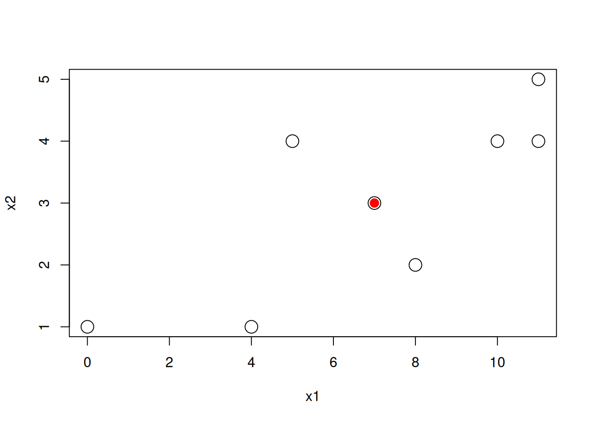
Here we’ve created some multivariate data. Notice that we have plotted the \(x\) values, not the \(y\) values. The red point is \((7, 3)\) which is the mean of x1 and the mean of x2 respectively.
We could calculate the leverages using the expressions defined above. We first create the \(X\) matrix, then calculate \(H\) as defined, and extract the diagonal elements.
X <- cbind(rep(1, 8), lev_ex$x1, lev_ex$x2)
H <- X %*% solve(t(X) %*% X) %*% t(X)
diag(H)[1] 0.6000 0.3750 0.2875 0.1250 0.4000 0.2125 0.5875 0.4125Notice here, we have two predictors, so the regression would have 3 \(\beta\) parameters, so the sum of the diagonal elements is 3.
sum(diag(H))[1] 3Alternatively, the method we will use more often, is to simply fit a regression, then use the hatvalues() function, which returns the leverages.
lev_fit <- lm(y ~ ., data = lev_ex)
hatvalues(lev_fit) 1 2 3 4 5 6 7 8
0.6000 0.3750 0.2875 0.1250 0.4000 0.2125 0.5875 0.4125 Again, note that here we have “used” the \(y\) values to fit the regression, but R still ignores them when calculating the leverages, as leverages only depend on the \(x\) values.
coef(lev_fit)(Intercept) x1 x2
3.7 -0.7 4.4 Let’s see what happens to these coefficients when we modify the y value of the point with the highest leverage.
which.max(hatvalues(lev_fit))1
1 lev_ex[which.max(hatvalues(lev_fit)),] x1 x2 y
1 0 1 11We see that the original y value is 11. We’ll create a copy of the data, and modify this point to have a y value of 20.
lev_ex_1 <- lev_ex
lev_ex_1$y[1] = 20
lm(y ~ ., data = lev_ex_1)
Call:
lm(formula = y ~ ., data = lev_ex_1)
Coefficients:
(Intercept) x1 x2
8.875 -1.375 4.625 Notice the large changes in the coefficients. Also notice that each of the coefficients has changed in some way. Note that the leverages of the points would not have changed, as we have not modified any of the \(x\) values.
Now let’s see what happens to these coefficients when we modify the y value of the point with the lowest leverage.
which.min(hatvalues(lev_fit))4
4 lev_ex[which.min(hatvalues(lev_fit)),] x1 x2 y
4 7 3 14We see that the original y value is 14. We’ll again create a copy of the data, and modify this point to have a y value of 30.
lev_ex_2 <- lev_ex
lev_ex_2$y[4] = 30
lm(y ~ ., data = lev_ex_2)
Call:
lm(formula = y ~ ., data = lev_ex_2)
Coefficients:
(Intercept) x1 x2
5.7 -0.7 4.4 This time despite a large change in the y value, there is only small change in the coefficients. Also, only the intercept has changed!
mean(lev_ex$x1)[1] 7mean(lev_ex$x2)[1] 3lev_ex[4,] x1 x2 y
4 7 3 14Notice that this point was the mean of both of the predictors.
Returning to our three plots, each with an added point, we can calculate the leverages for each. Note that the 11th data point each time is the added data point.
hatvalues(model_1) 1 2 3 4 5 6 7
0.33534597 0.23860732 0.16610842 0.11784927 0.09382988 0.09405024 0.11851036
8 9 10 11
0.16721022 0.24014985 0.33732922 0.09100926 hatvalues(model_2) 1 2 3 4 5 6 7
0.23238866 0.18663968 0.14979757 0.12186235 0.10283401 0.09271255 0.09149798
8 9 10 11
0.09919028 0.11578947 0.14129555 0.66599190 hatvalues(model_3) 1 2 3 4 5 6 7
0.27852761 0.21411043 0.16319018 0.12576687 0.10184049 0.09141104 0.09447853
8 9 10 11
0.11104294 0.14110429 0.18466258 0.49386503 Are any of these large?
hatvalues(model_1) > 2 * mean(hatvalues(model_1)) 1 2 3 4 5 6 7 8 9 10 11
FALSE FALSE FALSE FALSE FALSE FALSE FALSE FALSE FALSE FALSE FALSE hatvalues(model_2) > 2 * mean(hatvalues(model_2)) 1 2 3 4 5 6 7 8 9 10 11
FALSE FALSE FALSE FALSE FALSE FALSE FALSE FALSE FALSE FALSE TRUE hatvalues(model_3) > 2 * mean(hatvalues(model_3)) 1 2 3 4 5 6 7 8 9 10 11
FALSE FALSE FALSE FALSE FALSE FALSE FALSE FALSE FALSE FALSE TRUE We see that in the second and third plots, the added point is a point of high leverage. Recall that only in the third plot did that have an influence on the regression. To understand why, we’ll need to discuss outliers.
Outliers
Outliers are points which do not fit the model well. They may or may not have a large effect on the model. To identify outliers, we will look for observations with large residuals.
Note,
\[ e = y - \hat{y} = Iy - Hy = (I - H) y \]
Then, under the assumptions of linear regression,
\[ \text{Var}(e_i) = (1 - h_i) \sigma^2 \]
and thus estimating \(\sigma^2\) with \(s_e^2\) gives
\[ \text{SE}[e_i] = s_e \sqrt{(1 - h_i)}. \]
We can then look at the standardized residual for each observation, \(i = 1, 2, \ldots n\),
\[ r_i = \frac{e_i}{s_e\sqrt{1 - h_i}} \overset{approx}{\sim} N(\mu = 0, \sigma^ 2 = 1) \]
when \(n\) is large.
We can use this fact to identify “large” residuals. For example, standardized residuals greater than 2 in magnitude should only happen approximately 5 percent of the time.
Returning again to our three plots, each with an added point, we can calculate the residuals and standardized residuals for each. Standardized residuals can be obtained in R by using rstandard() where we would normally use resid().
resid(model_1) 1 2 3 4 5 6 7
0.4949887 -1.4657145 -0.5629345 -0.3182468 -0.5718877 -1.1073271 0.4852728
8 9 10 11
-1.1459548 0.9420814 -1.1641029 4.4138254 rstandard(model_1) 1 2 3 4 5 6 7
0.3464701 -0.9585470 -0.3517802 -0.1933575 -0.3428264 -0.6638841 0.2949482
8 9 10 11
-0.7165857 0.6167268 -0.8160389 2.6418234 rstandard(model_1)[abs(rstandard(model_1)) > 2] 11
2.641823 In the first plot, we see that the 11th point, the added point, is a large standardized residual.
resid(model_2) 1 2 3 4 5 6
1.03288292 -0.95203397 -0.07346766 0.14700626 -0.13084829 -0.69050140
7 8 9 10 11
0.87788484 -0.77755647 1.28626601 -0.84413207 0.12449986 rstandard(model_2) 1 2 3 4 5 6
1.41447023 -1.26655590 -0.09559792 0.18822094 -0.16574677 -0.86977220
7 8 9 10 11
1.10506546 -0.98294409 1.64121833 -1.09295417 0.25846620 rstandard(model_2)[abs(rstandard(model_2)) > 2]named numeric(0)In the second plot, we see that there are no points with large standardized residuals.
resid(model_3) 1 2 3 4 5 6
2.30296166 -0.04347087 0.47357980 0.33253808 -0.30683212 -1.22800087
7 8 9 10 11
-0.02113027 -2.03808722 -0.33578039 -2.82769411 3.69191633 rstandard(model_3) 1 2 3 4 5 6
1.41302755 -0.02555591 0.26980722 0.18535382 -0.16873216 -0.67141143
7 8 9 10 11
-0.01157256 -1.12656475 -0.18882474 -1.63206526 2.70453408 rstandard(model_3)[abs(rstandard(model_3)) > 2] 11
2.704534 In the last plot, we see that the 11th point, the added point, is a large standardized residual.
Recall that the added point in plots two and three were both high leverage, but now only the point in plot three has a large residual. We will now combine this information and discuss influence.
Influence
As we have now seen in the three plots, some outliers only change the regression a small amount (plot one) and some outliers have a large effect on the regression (plot three). Observations that fall into the latter category, points with (some combination of) high leverage and large residual, we will call influential.
A common measure of influence is Cook’s Distance, which is defined as
\[ D_i = \frac{1}{p}r_i^2\frac{h_i}{1-{h_i}}. \]
Notice that this is a function of both leverage and standardized residuals.
A Cook’s Distance is often considered large if
\[ D_i > \frac{4}{n} \]
and an observation with a large Cook’s Distance is called influential. This is again simply a heuristic, and not an exact rule.
The Cook’s distance for each point of a regression can be calculated using cooks.distance() which is a default function in R. Let’s look for influential points in the three plots we had been considering.
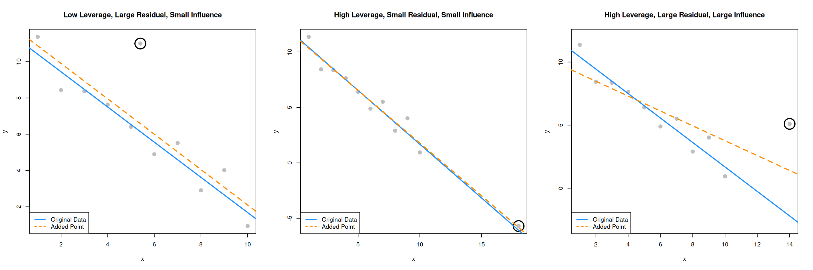
Recall that the circled points in each plot have different characteristics:
- Plot One: low leverage, large residual.
- Plot Two: high leverage, small residual.
- Plot Three: high leverage, large residual.
We’ll now directly check if each of these is influential.
cooks.distance(model_1)[11] > 4 / length(cooks.distance(model_1)) 11
FALSE cooks.distance(model_2)[11] > 4 / length(cooks.distance(model_2)) 11
FALSE cooks.distance(model_3)[11] > 4 / length(cooks.distance(model_3)) 11
TRUE And, as expected, the added point in the third plot, with high leverage and a large residual, is considered influential!
13.4 Data Analysis Examples
Good Diagnostics
Last chapter we fit an additive regression to the mtcars data with mpg as the response and hp and am as predictors. Let’s perform some diagnostics on this model.
First, fit the model as we did last chapter.
mpg_hp_add <- lm(mpg ~ hp + am, data = mtcars)plot(fitted(mpg_hp_add), resid(mpg_hp_add), col = "grey", pch = 20,
xlab = "Fitted", ylab = "Residual",
main = "mtcars: Fitted versus Residuals")
abline(h = 0, col = "darkorange", lwd = 2)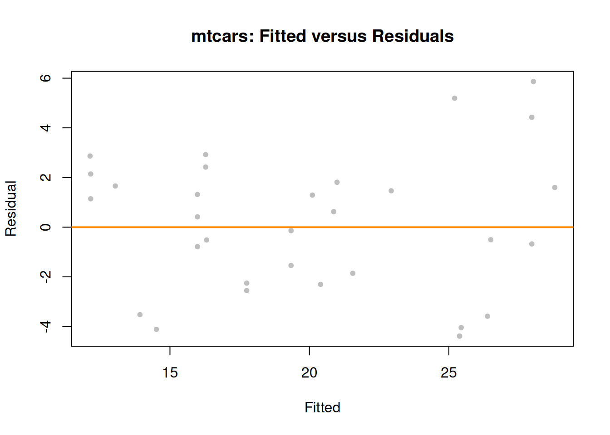
The fitted versus residuals plot looks good. We don’t see any obvious pattern, and the variance looks roughly constant. (Maybe a little larger for large fitted values, but not enough to worry about.)
bptest(mpg_hp_add)
studentized Breusch-Pagan test
data: mpg_hp_add
BP = 7.5858, df = 2, p-value = 0.02253The Breusch-Pagan test verifies this, at least for a small \(\alpha\) value.
qqnorm(resid(mpg_hp_add), col = "darkgrey")
qqline(resid(mpg_hp_add), col = "dodgerblue", lwd = 2)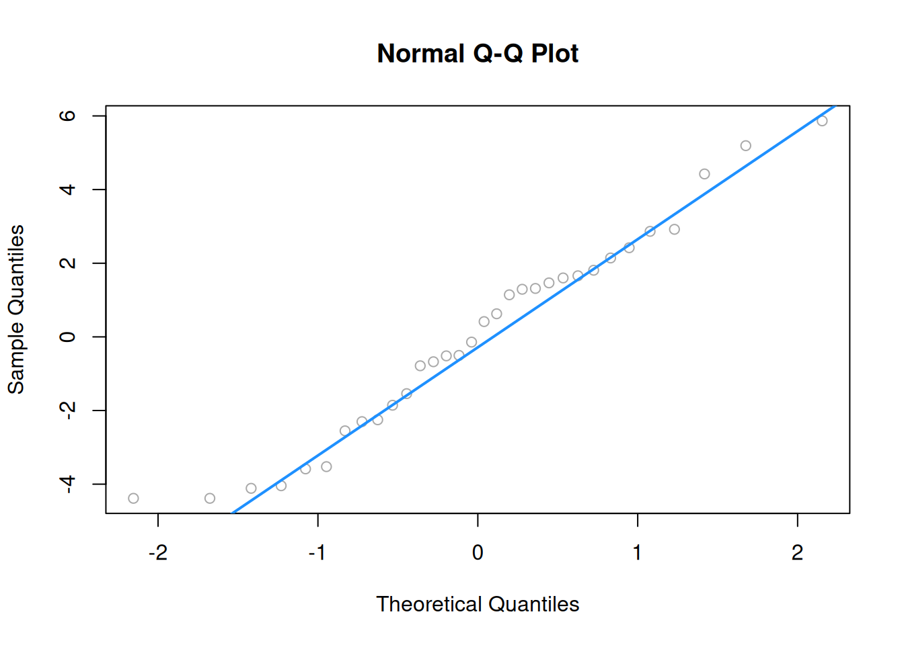
The Q-Q plot looks extremely good and the Shapiro-Wilk test agrees.
shapiro.test(resid(mpg_hp_add))
Shapiro-Wilk normality test
data: resid(mpg_hp_add)
W = 0.96485, p-value = 0.3706sum(hatvalues(mpg_hp_add) > 2 * mean(hatvalues(mpg_hp_add)))[1] 2We see that there are two points of large leverage.
sum(abs(rstandard(mpg_hp_add)) > 2)[1] 1There is also one point with a large residual. Do these result in any points that are considered influential?
cd_mpg_hp_add <- cooks.distance(mpg_hp_add)
sum(cd_mpg_hp_add > 4 / length(cd_mpg_hp_add))[1] 2large_cd_mpg <- cd_mpg_hp_add > 4 / length(cd_mpg_hp_add)
cd_mpg_hp_add[large_cd_mpg]Toyota Corolla Maserati Bora
0.1772555 0.3447994 We find two influential points. Interestingly, they are very different cars.
coef(mpg_hp_add)(Intercept) hp am
26.5849137 -0.0588878 5.2770853 Since the diagnostics looked good, there isn’t much need to worry about these two points, but let’s see how much the coefficients change if we remove them.
mpg_hp_add_fix <- lm(mpg ~ hp + am,
data = mtcars,
subset = cd_mpg_hp_add <= 4 / length(cd_mpg_hp_add))
coef(mpg_hp_add_fix)(Intercept) hp am
27.22190933 -0.06286249 4.29765867 It seems there isn’t much of a change in the coefficients as a result of removing the supposed influential points. Notice we did not create a new dataset to accomplish this. We instead used the subset argument to lm(). Think about what the code cd_mpg_hp_add <= 4 / length(cd_mpg_hp_add) does here.
par(mfrow = c(2, 2))
plot(mpg_hp_add)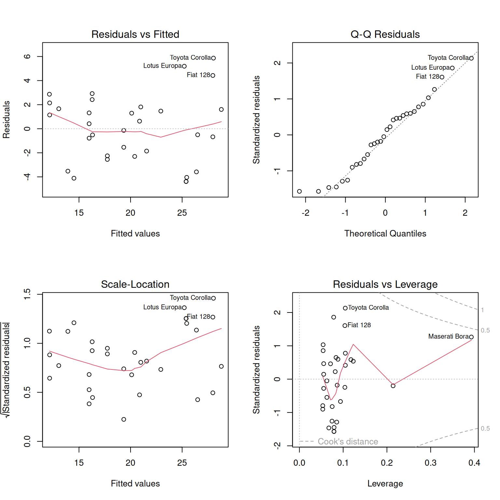
Notice that calling plot() on a variable which stores an object created by lm() outputs four diagnostic plots by default. Use ?plot.lm to learn more. The first two should already be familiar.
Suspect Diagnostics
Let’s consider the model big_model from last chapter which was fit to the autompg dataset. It used mpg as the response, and considered many interaction terms between the predictors disp, hp, and domestic.
str(autompg)'data.frame': 383 obs. of 9 variables:
$ mpg : num 18 15 18 16 17 15 14 14 14 15 ...
$ cyl : Factor w/ 3 levels "4","6","8": 3 3 3 3 3 3 3 3 3 3 ...
$ disp : num 307 350 318 304 302 429 454 440 455 390 ...
$ hp : num 130 165 150 150 140 198 220 215 225 190 ...
$ wt : num 3504 3693 3436 3433 3449 ...
$ acc : num 12 11.5 11 12 10.5 10 9 8.5 10 8.5 ...
$ year : int 70 70 70 70 70 70 70 70 70 70 ...
$ origin : int 1 1 1 1 1 1 1 1 1 1 ...
$ domestic: num 1 1 1 1 1 1 1 1 1 1 ...big_model <- lm(mpg ~ disp * hp * domestic, data = autompg)qqnorm(resid(big_model), col = "darkgrey")
qqline(resid(big_model), col = "dodgerblue", lwd = 2)
shapiro.test(resid(big_model))
Shapiro-Wilk normality test
data: resid(big_model)
W = 0.96161, p-value = 1.824e-08Here both the Q-Q plot, and the Shapiro-Wilk test suggest that the normality assumption is violated.
big_mod_cd <- cooks.distance(big_model)
sum(big_mod_cd > 4 / length(big_mod_cd))[1] 31Here, we find 31, so perhaps removing them will help!
big_model_fix <- lm(mpg ~ disp * hp * domestic,
data = autompg,
subset = big_mod_cd < 4 / length(big_mod_cd))
qqnorm(resid(big_model_fix), col = "grey")
qqline(resid(big_model_fix), col = "dodgerblue", lwd = 2)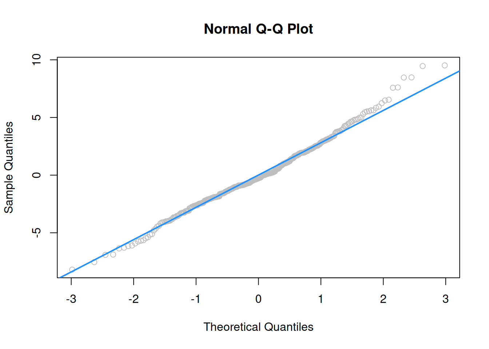
shapiro.test(resid(big_model_fix))
Shapiro-Wilk normality test
data: resid(big_model_fix)
W = 0.99035, p-value = 0.02068Removing these points results in a much better Q-Q plot, and now Shapiro-Wilk fails to reject for a low \(\alpha\).
We’ve now seen that sometimes modifying the data can fix issues with regression. However, next chapter, instead of modifying the data, we will modify the model via transformations.